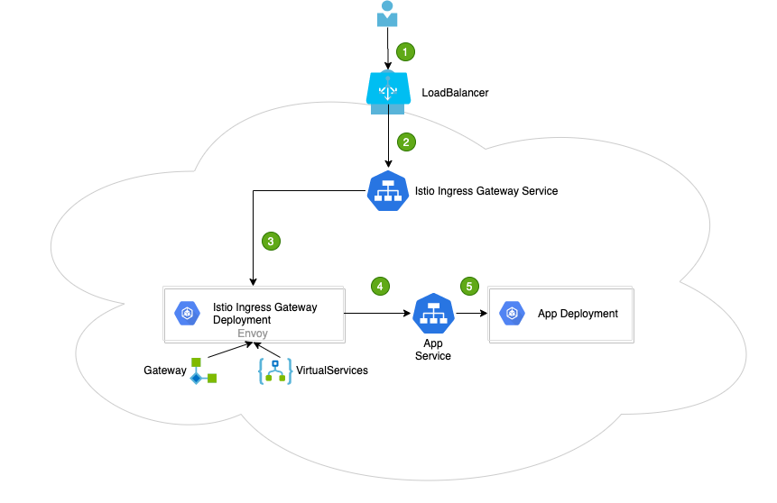

istio 基础知识
Istio 的架构分为控制平面和数据平面。
数据平面：由一组智能代理（Envoy）以 sidecar 模式部署，协调和控制所有服务之间的网络通信。
控制平面：负责管理和配置代理路由流量，以及在运行时执行的政策。
组件
istio-polit:服务发现，向数据平面下发规则，包括VirtualService、DestinationRule、Gateway、ServicEntry等流量治理规则，也包括认证授权等安全规则。
istio-telemetry:专门收集遥测数据的mixer服务组件。
Istio-policy:另外一个mixer服务，可以对接如配额、授权、黑白名单等不同的控制后端，对服务间的访问进行控制。
Istio-citadel:核心安全组件，提供了自动生成、分发、轮换与撤销秘钥和证书的功能。
Istio-galley:配置管理的组件，验证配置信息的格式和内容的正确性，并将这些配置信息提供给管理面的Pilot和Mixer使用。
Istio-sidecar-injector:负责自动注入的组件。
Istio-proxy:数据面的轻量代理。
Istio-ingressgateway:入口处的gateway。
sidecar 容器
- 在k8s1.18 之前，这两种容器从k8s管理的角度来看，并没有什么区别。只不过人为从功能上做了区分。
istio sidecar
istio默认sidecar注入规则是，namespace带有标签istio-injection: enabled才会注入sidecar
#查看 namespace 下的 istio-injection 标签
kubectl get namespace -L istio-injection
NAME STATUS AGE ISTIO-INJECTION
cicd Active 88d
default Active 457d enabled
devops Active 400d
gitlab Active 114d
glzh-dev Active 450d enabled
glzh-test Active 402d enabled
istio-system Active 457d disabled
kube-node-lease Active 422d
kube-public Active 457d
kube-system Active 457d
kube-users Active 3d11h
logging Active 422d
monitoring Active 420d
ops Active 213d
voting-app-env-dev Active 2d19h
voting-app-env-qa Active 2d19h
zadig Active 7d1h
默认是没有设置的，可以通过以下命令设置
kubectl label namespace default istio-injection=enabled --overwrite
如果POD配置了注解、neverInjectSelector/alwaysInjectSelector也都配置了，默认策略也配置了，那么他们之间的优先级参考如下：
Pod Annotations → NeverInjectSelector → AlwaysInjectSelector → Default Policy [
](https://blog.csdn.net/wzy_168/article/details/103694078) https://blog.csdn.net/wzy_168/article/details/103694078
动态准入 WEB hook
Istio 使用 ValidatingAdmissionWebhooks 验证 Istio 配置，使用 MutatingAdmissionWebhooks 自动将 Sidecar 代理注入至用户 Pod。
https://istio.io/latest/zh/docs/ops/configuration/mesh/webhook/
注入原理
两种方法
手动 手动注入直接修改配置，如 deployment，并将代理配置注入其中。
自动 当 pod 所属namespace启用自动注入后，自动注入器会使用准入控制器在创建 Pod 时自动注入代理配置。
init 初始化容器
istio-init 用于设置 iptables 规则，以便将入站/出站流量通过 Sidecar 代理
该容器存在的意义就是让 sidecar 代理可以拦截所有的进出 pod 的流量，15090 端口（Mixer 使用）和 15092 端口（Ingress Gateway）除外的所有入站（inbound）流量重定向到 15006 端口（sidecar），再拦截应用容器的出站（outbound）流量经过 sidecar 处理（通过 15001 端口监听）后再出站。关于 Istio 中端口用途请参考 Istio 官方文档。
apiVersion: v1
kind: Pod
metadata:
annotations:
prometheus.io/path: /v1/message/actuator/prometheus
prometheus.io/port: "8800"
prometheus.io/scrape: "true"
sidecar.istio.io/inject: "true"
sidecar.istio.io/proxyCPU: 10m
sidecar.istio.io/status: '{"version":"e606374caf7d0b5a4483bb4f35ceed164e8f85e7d18efc285dad0665da4eff32","initContainers":["istio-init"],"containers":["istio-proxy"],"volumes":["istio-envoy","istio-certs"],"imagePullSecrets":null}'
creationTimestamp: "2021-08-19T09:30:11Z"
generateName: gl-bs-message-65dcd76cbb-
labels:
app: gl-bs-message
group: backend
lang: java
pod-template-hash: 65dcd76cbb
version: v1
name: gl-bs-message-65dcd76cbb-5fg7d
namespace: glzh-dev
ownerReferences:
- apiVersion: apps/v1
blockOwnerDeletion: true
controller: true
kind: ReplicaSet
name: gl-bs-message-65dcd76cbb
uid: 83c52a49-2241-45aa-9eb4-6f34aa0f4ed8
resourceVersion: "152458914"
selfLink: /api/v1/namespaces/glzh-dev/pods/gl-bs-message-65dcd76cbb-5fg7d
uid: 13560a86-b369-4dbc-9e0e-f4d452527a28
spec:
containers:
- env:
- name: BUILD_NUMBER
value: "335"
- name: NODE_NAME
valueFrom:
fieldRef:
apiVersion: v1
fieldPath: spec.nodeName
- name: APP_NAME
valueFrom:
fieldRef:
apiVersion: v1
fieldPath: metadata.labels['app']
- name: POD_NAME
valueFrom:
fieldRef:
apiVersion: v1
fieldPath: metadata.name
- name: POD_NAMESPACE
valueFrom:
fieldRef:
apiVersion: v1
fieldPath: metadata.namespace
- name: POD_IP
valueFrom:
fieldRef:
apiVersion: v1
fieldPath: status.podIP
- name: JAVA_OPTS
- name: SPRING_PROFILES_ACTIVE
value: dev
- name: TZ
value: Asia/Shanghai
image: swr.cn-north-4.myhuaweicloud.com/glzh-dev/gl-bs-message:f1b36e8f
imagePullPolicy: Always
lifecycle:
preStop:
exec:
command:
- curl
- -X POST
- http://127.0.0.1:8800/v1/message/actuator/shutdown
livenessProbe:
failureThreshold: 2
httpGet:
path: /v1/message/actuator/health
port: 8800
scheme: HTTP
initialDelaySeconds: 60
periodSeconds: 5
successThreshold: 1
timeoutSeconds: 1
name: spring-boot
readinessProbe:
failureThreshold: 3
httpGet:
path: /v1/message/actuator/health
port: 8800
scheme: HTTP
periodSeconds: 2
successThreshold: 3
timeoutSeconds: 1
resources:
limits:
cpu: "1"
memory: 1Gi
requests:
cpu: 10m
memory: 256Mi
terminationMessagePath: /dev/termination-log
terminationMessagePolicy: File
volumeMounts:
- mountPath: /app/logs
name: log-volume
subPathExpr: $(POD_NAMESPACE)/$(APP_NAME)/$(POD_NAME)
- mountPath: /var/run/secrets/kubernetes.io/serviceaccount
name: default-token-2lf9r
readOnly: true
- args:
- proxy
- sidecar
- --domain
- $(POD_NAMESPACE).svc.cluster.local
- --configPath
- /etc/istio/proxy
- --binaryPath
- /usr/local/bin/envoy
- --serviceCluster
- gl-bs-message.$(POD_NAMESPACE)
- --drainDuration
- 45s
- --parentShutdownDuration
- 1m0s
- --discoveryAddress
- istio-pilot.istio-system:15011
- --zipkinAddress
- zipkin.istio-system:9411
- --proxyLogLevel=warning
- --proxyComponentLogLevel=misc:error
- --connectTimeout
- 10s
- --proxyAdminPort
- "15000"
- --concurrency
- "2"
- --controlPlaneAuthPolicy
- MUTUAL_TLS
- --dnsRefreshRate
- 300s
- --statusPort
- "15020"
- --applicationPorts
- ""
- --controlPlaneBootstrap=false
env:
- name: POD_NAME
valueFrom:
fieldRef:
apiVersion: v1
fieldPath: metadata.name
- name: POD_NAMESPACE
valueFrom:
fieldRef:
apiVersion: v1
fieldPath: metadata.namespace
- name: INSTANCE_IP
valueFrom:
fieldRef:
apiVersion: v1
fieldPath: status.podIP
- name: HOST_IP
valueFrom:
fieldRef:
apiVersion: v1
fieldPath: status.hostIP
- name: ISTIO_META_POD_NAME
valueFrom:
fieldRef:
apiVersion: v1
fieldPath: metadata.name
- name: ISTIO_META_CONFIG_NAMESPACE
valueFrom:
fieldRef:
apiVersion: v1
fieldPath: metadata.namespace
- name: ISTIO_META_INTERCEPTION_MODE
value: REDIRECT
- name: ISTIO_META_INCLUDE_INBOUND_PORTS
- name: ISTIO_METAJSON_ANNOTATIONS
value: |
{"prometheus.io/path":"/v1/message/actuator/prometheus","prometheus.io/port":"8800","prometheus.io/scrape":"true","sidecar.istio.io/inject":"true","sidecar.istio.io/proxyCPU":"10m"}
- name: ISTIO_METAJSON_LABELS
value: |
{"app":"gl-bs-message","group":"backend","lang":"java","pod-template-hash":"65dcd76cbb","version":"v1"}
image: 100.125.0.78:20202/istio/proxyv2:1.3.0-r6
imagePullPolicy: Always
name: istio-proxy
ports:
- containerPort: 15090
name: http-envoy-prom
protocol: TCP
readinessProbe:
failureThreshold: 30
httpGet:
path: /healthz/ready
port: 15020
scheme: HTTP
initialDelaySeconds: 1
periodSeconds: 2
successThreshold: 1
timeoutSeconds: 1
resources:
requests:
cpu: 10m
securityContext:
readOnlyRootFilesystem: true
runAsGroup: 1337
runAsUser: 1337
terminationMessagePath: /dev/termination-log
terminationMessagePolicy: File
volumeMounts:
- mountPath: /etc/istio/proxy
name: istio-envoy
- mountPath: /etc/certs/
name: istio-certs
readOnly: true
- mountPath: /var/run/secrets/kubernetes.io/serviceaccount
name: default-token-2lf9r
readOnly: true
dnsConfig:
options:
- name: timeout
value: "2"
- name: ndots
value: "5"
- name: single-request-reopen
dnsPolicy: ClusterFirst
enableServiceLinks: true
imagePullSecrets:
- name: default-secret
initContainers:
- command:
- /usr/local/bin/istio-iptables.sh
- -p
- "15001"
- -z
- "15006"
- -u
- "1337"
- -m
- REDIRECT
- -i
- '*'
- -x
- ""
- -b
- ""
- -d
- "15020"
image: 100.125.0.78:20202/istio/proxy_init:1.3.0-r6
imagePullPolicy: Always
name: istio-init
resources:
limits:
cpu: 100m
memory: 50Mi
requests:
cpu: 10m
memory: 10Mi
securityContext:
capabilities:
add:
- NET_ADMIN
runAsNonRoot: false
runAsUser: 0
terminationMessagePath: /dev/termination-log
terminationMessagePolicy: File
volumeMounts:
- mountPath: /var/run/secrets/kubernetes.io/serviceaccount
name: default-token-2lf9r
readOnly: true
nodeName: 10.20.7.125
priority: 0
restartPolicy: Always
schedulerName: default-scheduler
securityContext: {}
serviceAccount: default
serviceAccountName: default
terminationGracePeriodSeconds: 30
tolerations:
- effect: NoExecute
key: node.kubernetes.io/not-ready
operator: Exists
tolerationSeconds: 300
- effect: NoExecute
key: node.kubernetes.io/unreachable
operator: Exists
tolerationSeconds: 300
volumes:
- hostPath:
path: /var/log/k8s
type: DirectoryOrCreate
name: log-volume
- name: default-token-2lf9r
secret:
defaultMode: 420
secretName: default-token-2lf9r
- emptyDir:
medium: Memory
name: istio-envoy
- name: istio-certs
secret:
defaultMode: 420
optional: true
secretName: istio.default
status:
conditions:
- lastProbeTime: null
lastTransitionTime: "2021-08-23T01:52:24Z"
status: "True"
type: Initialized
- lastProbeTime: null
lastTransitionTime: "2021-08-19T09:30:58Z"
status: "True"
type: Ready
- lastProbeTime: null
lastTransitionTime: "2021-08-19T09:30:58Z"
status: "True"
type: ContainersReady
- lastProbeTime: null
lastTransitionTime: "2021-08-19T09:30:11Z"
status: "True"
type: PodScheduled
containerStatuses:
- containerID: docker://2df09196413fa405bed2a017104ee1fd8df19bd395b9bdeeb2fcca51c409a23e
image: 100.125.0.78:20202/istio/proxyv2:1.3.0-r6
imageID: docker-pullable://100.125.0.78:20202/istio/proxyv2@sha256:88937c34bfb1fc49ca2d1ff76fbe1faed16f5aefccf4319d127fc861f4ee595d
lastState: {}
name: istio-proxy
ready: true
restartCount: 0
state:
running:
startedAt: "2021-08-19T09:30:24Z"
- containerID: docker://bc3e4f7f1c4d4a4e339aca272dde0f92fbdd7792913a78175bf4a974fcc73713
image: swr.cn-north-4.myhuaweicloud.com/glzh-dev/gl-bs-message:f1b36e8f
imageID: docker-pullable://swr.cn-north-4.myhuaweicloud.com/glzh-dev/gl-bs-message@sha256:04ac249a6e2f85e78d567049261ca7b57ab7c6f468d77c8010b57c437e4a0cb4
lastState: {}
name: spring-boot
ready: true
restartCount: 0
state:
running:
startedAt: "2021-08-19T09:30:23Z"
hostIP: 10.20.7.125
initContainerStatuses:
- containerID: docker://be87a5d058add2867fbe1dd4e2946f9dba7bdbdd29e5e1a958cbf824f694a6a0
image: 100.125.0.78:20202/istio/proxy_init:1.3.0-r6
imageID: docker-pullable://100.125.0.78:20202/istio/proxy_init@sha256:65bb8f75fb0eac708735b894a3f31b43f15ee8e731d02b2911238845cb71aeab
lastState: {}
name: istio-init
ready: true
restartCount: 0
state:
terminated:
containerID: docker://be87a5d058add2867fbe1dd4e2946f9dba7bdbdd29e5e1a958cbf824f694a6a0
exitCode: 0
finishedAt: "2021-08-23T01:52:13Z"
reason: Completed
startedAt: "2021-08-23T01:52:12Z"
phase: Running
podIP: 172.16.0.56
podIPs:
- ip: 172.16.0.56
qosClass: Burstable
startTime: "2021-08-19T09:30:11Z"
自动注入
总结：可以看到，整个注入过程实际就是原本的Pod配置反解析成Pod对象，把需要注入的Yaml内容(如:Sidecar)反序列成对象然后append到对应Pod (如：Container)上，然后再把修改后的Pod重新解析成yaml 内容返回给k8s的api server，然后k8s 拿着修改后内容再将这两个容器调度到同一台机器进行部署，至此就完成了对应Sidecar的注入。

istio gateway

基于istio的网关选型：
https://zhaohuabing.com/post/2019-03-29-how-to-choose-ingress-for-service-mesh/
https://www.servicemesher.com/blog/service-mesh-and-api-gateway/